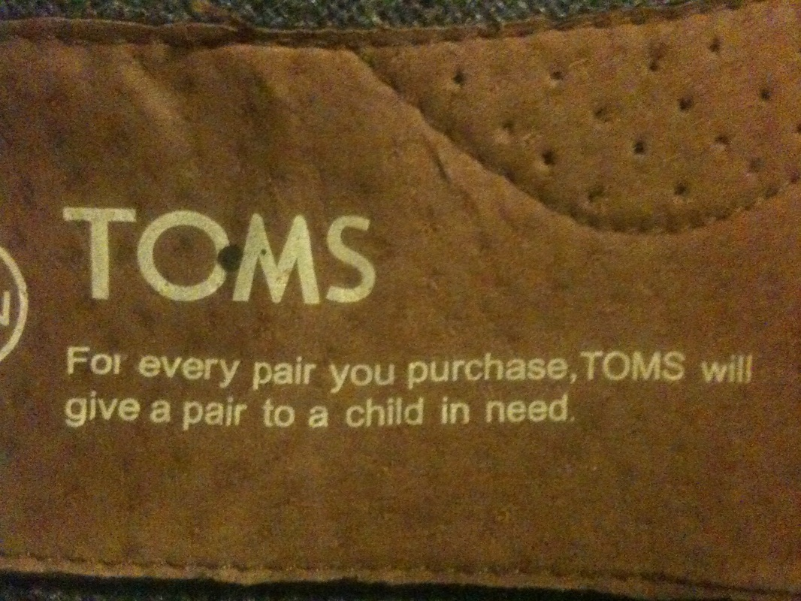
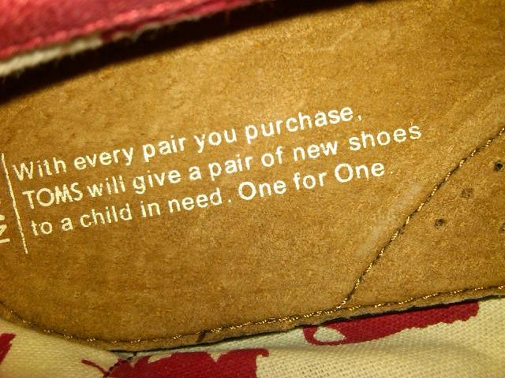

Copy-Editing
Copy-editing is a time to polish writing for clarity while maintaining the author's voice and meaning. If welcomed, I will also often
offer my own suggestions for your consideration.
Proofreading
Proofreading takes place after copy-editing. It is usually the last pair of eyes to check for spelling, grammar, punctuation,
capitalization, and similar mechanical errors.
“I've worked with various editors and none compare to what Adam can do. Adam is thorough and detailed in his approach; his editing style brings a fresh perspective, offering thoughts and suggestions that have helped me elevate my writing.”
This book of yours (proposal, manuscript, article, blog, pamphlet, web copy, zine, dead-sea-scroll, grad school essay, or whathaveyou), is it safe to say you've come to consider it a baby? And if so, has this baby been nursing with you now far longer than Parenting Magazine might reasonably recommend?
When we're IN IT—as you are now, presumably—it is so very easy for our own eyes to miss those smallest of errors, the simple typos and nasty grammatical oversights that make us clench a fist and grit our teeth, cursing mildly when our sister points out that we've written “to” rather than “too” on page 24.
(“Damn it! Yes, so we have, Tara… So. We. Have.”)
We are our own worst editors because our eyes know what our brain wanted to say. And that's the valley where typos triumph. (Free Tip: Speak your writing out loud.)
“Adam is a talented writer and a highly-skilled editor. I've hired him twice to copy-edit my books, and I would highly recommend him if you are looking for thorough and meticulous editing work. He's one of the best editors I've ever worked with.”
BUT the content is there. Your content IS THERE. And that's terrific. You've done the work; you've done the hard work already. You already wrote the thing! You're about to ship. And you need to ship.
Don't trip on this late—but not insignificant—step toward that coveted finish. Don't allow a few silly typos to cloud the impression your readers may take away from what you've already worked so hard to get right. So hard to say. Truth is though, they probably won't notice. Frankly, most people don't. And your message will STILL land. So, congratulations on shipping. Typos or not.
Some people have the opposite problem - letting the perfect become the enemy of the ever-done-at-all. This is, of course, the point where resistance rears its head. And a project dies the quietest death.
But not you; you're an author. You take your work seriously. AND please don't let that small published typo ruin your day. Because though it is small—to you, in that future moment of first-noticing—it's also not small. It stings; it will be annoying. In fact, it may very well even ruin your day still. (Perhaps it already has?) If you allow it. (Because it'll likely still be hot too, right off the press - the most perfectly opportune time to notice such things. Also why Gmail Labs added the unsend feature.)
"Thank you so much for helping me with my Statement of Purpose. I couldn't have done it without you. Thank you for organizing my chaos and getting me on the right track to write more eloquently; I am feeling very grateful for you."
An aside, if you'll humor me:
I'm quite certain this has something to do with how—for so long—we humans have just come to internalize the printed word as the final word, the final say. Because books were rare. Publishing was a daunting task.
And though publishing now is logistically very easy, writing still remains daunting on a whole different level. It's important to remember that any printed words and their accompanying typos could only ever have been strung together by any other human no more perfect than yourself. In fact, depending on how far back you want to go, I'd wager sometimes significantly less so.
Anyway, before I wax too religious… what I'm trying to say here is—if you're picking up what I've been putting down thus far—allow me to help. I'd like to help.
Let me tap you out of this dystopian WrestleMania™-of-Words and step into the Burning Ring of Fiery Grammatical Errors on your behalf.
Take a break. (🎶 “Run away with us for the summer.”)
I've been catching typos and those all-too-easy-to-miss grammatical errors for as long as I can remember—for the better part of two decades now—dog-earing corners of countless paperback pages as I circled yet another printed, stone-carved, forever-etched, permanently-published, OFFICIAL (gasp) mistake since I was—what?—maybe 14? Just about 25 years.
Some call it a CURSE; if I were one to call it anything, that word might be fun.(Yea, you know, like semicolons; fun.) My story is that I can't read anything without finding even the smallest of errors. Once, in the grocery store, I picked up a cereal box and told Lianne, “I feel like I could find a typo somewhere on this box in the next 30 seconds.” And I did! There most certainly was a legitimate error. (I can only surmise that in the instantaneous moment it took me to postulate this wager, I had already subconsciously spotted said error and tallied my +1. But I actually don't think it happened that way.)
"Adam was a brilliant copy-editor! His keen eye was not only able to find all of the little typos and grammar tweaks, but he added a fresh perspective on how to frame certain messages to read more clearly to my audience as well. If you're looking for some editing support, don't hesitate in reaching out and working with Adam!"
Another time, while navigating the lovely night-markets under Taipei's overpasses, my eye was quickly drawn toward a massive billboard spanning multiple floors of an office skyscraper across the street and its most-definitely-though-just-slightly-(but-of-course-critically)-misspelled website URL.
At TOMS Shoes, I proposed a relatively minor—but not insignificant—update to our mission statement because I saw potential in the impact of one word. That first word, with. And now, these words continue to be printed in the soles of millions of pairs of TOMS—and under an equal number of small feet—around the world.

From For

to With
“He suggested we change “For every pair…” to “With every pair…” — and we did. Why? Because our customers are an integral
part of the TOMS ecosystem. We aren't giving for them, we are giving with them.”
“With every pair you purchase, TOMS will give a pair of new shoes to a child in need. One for One.”
Copy-editing in the Obama White House, I reviewed the Recovery Through Retrofit Report to Vice President Biden and his Middle-Class Task Force. (Not much more to say about that; it was actually sort of a boring paper… $80 billion dollars, yawn. No, just kidding, investment in renewable energy infrastructure and green jobs is quite exciting.)
Over my three years in rural Zambia as a Peace Corps Volunteer, I edited and proofread numerous organization documents. (Do you know anyone else who winds down a day at the fish ponds by editing government training manuals by dim solar light, on the side?)
Making moonlighting literal
Today, I enjoy the pleasure of continuing to work with inspiring thought leaders like millennial workplace expert Adam “Smiley” Poswolsky and Colin Wright, host of the always-insightful weekly podcast, Let's Know Things. (If you're into intelligent podcasts, you won't regret adding Let's Know Things to your regular queue. Highly recommended!)
“Adam's got an incredible eye for errors and can help you wrangle your writing into sharper shape.”
You need another pair of eyes.
Your work deserves nothing less.
“Here, use mine.” And lucky you, I actually have 20/10 vision. (Did you see how small that billboard URL was?) Yes, 20/10 vision is a real thing; my eyesight is even better than 20/20. (Though I am colorblind, so… just don't ask for my fashionista opinion on that #OOTD and we're good.)
For important documents of any length, I'm Adam; hello.
"Working with Adam as an editor has been absolutely incredible! He came highly recommended by a friend who's an accomplished author, and I can't thank them enough. Adam's unwavering support and belief in my work, despite it taking me a decade to write, has been phenomenal. As a neurodivergent individual, I require kindness, patience, and a unique approach, all of which Adam possesses in abundance. His nurturing nature, genuine care, and remarkable attention to detail have been invaluable. I wholeheartedly recommend hiring Adam as an editor - you won't regret it. Thank you, Adam, for helping me complete my book “Be Who You Needed” that has become an Amazon bestseller!"
Please share anything that will help me evaluate your needs and how I might best be of service to your work. What's your writing about? Are you on a timeline? What stage of the process are you in? Are you looking for final proofreading or a copy-edit open to suggestions, etc.?
For sensitive work you might prefer to encrypt, here's my PGP Public Key:
“Adam proofread my resume before our Close of Service Conference with the Peace Corps. We had a session on resumes later that week and I wanted mine to be ready. What I came to find was that all the suggestions Adam had for me were the same ones that the speaker would later bring up. He has an eye for small details that you wouldn't even think to look at. Coming back to the states during a pandemic, I was worried that I wouldn't be able to find a job, especially because there were no in-person interviews happening. I think my resume definitely did a lot of the heavy lifting; it's what got my foot in the door when I physically couldn't. I now hold a position as a Family Services Specialist with a non-profit that works with migrants and I couldn't ask for more.”
🧾 Pay Online
I will maintain a shared CryptPad spreadsheet (like Google docs, but private) recording all my time working on your writing, so you are welcome to follow my process in real-time.
This will also serve as your invoice later.
No deposit necessary. Please pay within 30 days of receiving your edits. Much appreciated.
My priority will always be returning your work to you on your timeline without sacrificing quality in my review.
Online payment methods preferred include:
Bitcoin (Lightning) on CoinOS ⚡: coinos.io/AdamsEdits for a unique Bitcoin payment address (Best BTC method).
**With Venmo or PayPal, please select "Friends and Family" as opposed to "Goods and Services"...because aren't we anyway? (And the fees are terrible.)
Trust that if you have any issues whatsoever, I'll make it right.
(Yes, checks accepted upon request.)
Thank you.
“Adam has been proofreading and editing my articles and speeches for years. He has a keen attention-to-detail, not only for grammar and punctuation, but for style and word choice. I always appreciate his suggestions and feedback. Adam has an ability to focus fully on the job to complete it in a prompt and professional manner every time. He's like a sieve that can sift through even the smallest errors that would otherwise make it through a colander. I highly recommend Adam to assist with all of your editing needs!”